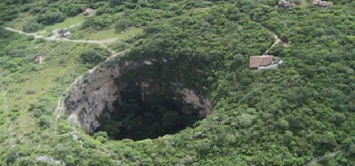
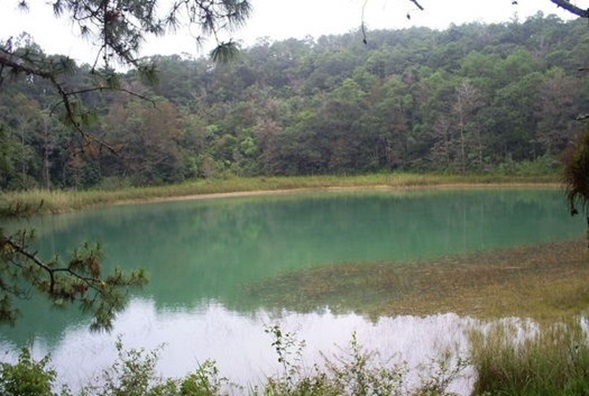

La palabra Ocozocoautla es de origen nahoa y viene de los vocablos okoshotl, ocozote (cierta planta textil) y kuautla, bosque, es decir “Bosque de los ocozotes”. Se ubica en la parte occidental del estado, abarcando parte de la Depresión Central y de las Montañas del Norte. Colinda al Norte con Tecpatán, al Este con Berriozábal, Tuxtla Gutiérrez y Suchiapa, al Sur con Villaflores y al Oeste con Jiquipilas y Cintalapa.
El 19 de enero de 1926, el pueblo de Ocozocoautla fue elevado a la categoría de ciudad, según decreto promulgado por Carlos A. Vidal, Gobernador Constitucional del Estado. Desde el 1o. de diciembre de 1928, la ciudad de Ocozocoautla lleva el apellido de Espinosa, en honor al insigne revolucionario Luis Espinosa, por decreto de Raymundo Enríquez, Gobernador Constitucional del Estado.
